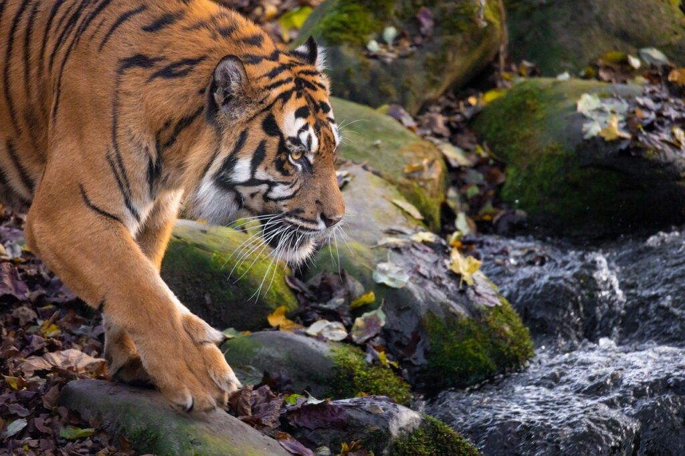
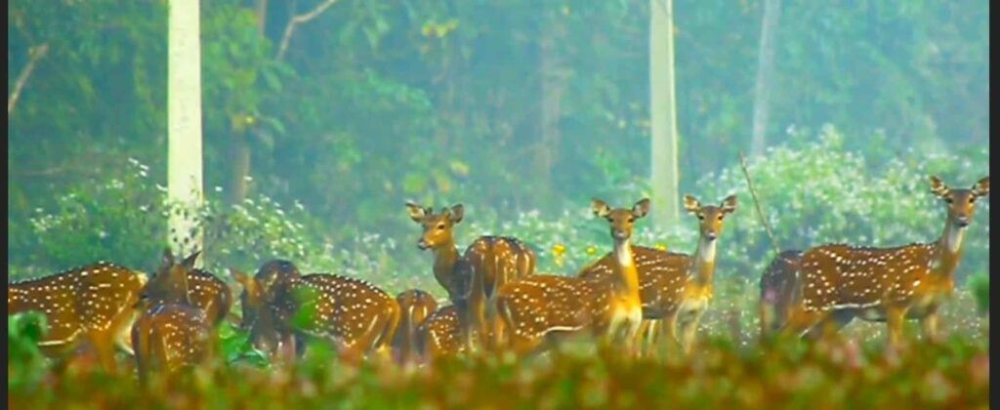

Dandeli Wildlife Sanctuary
Dandeli Wildlife Sanctuary beckons wildlife enthusiasts to immerse themselves in the embrace of lush green forests and diverse fauna.
Nestled in the Western Ghats, this sanctuary stands out among the Best places to visit in Dandeli, offering a breathtaking landscape adorned with river valleys and verdant hills.
Visitors can escape the ordinary life with thrilling activities such as wildlife safari, white water rafting, kayaking, canoeing, and mountain biking. The sanctuary is a haven for animal sightings, with black panthers, elephants, crocodiles, and vibrant bird species like Malabar pied hornbills and golden-backed woodpeckers.
The sanctuary is a 13 km from Dandeli Bus Stand.
Halamaddi Deer Spot
Halamaddi Deer Spot
Discover the underrated gem of Dandeli – Halamaddi, the go-to place to witness a herd of spotted deer in their natural habitat. While many tourists flock to Dandeli for nature’s beauty and wildlife, a jungle safari might not always guarantee animal sightings. Fortunately, just 2 km from Dandeli bus stand, Halamaddi emerges as a hidden sanctuary.
Every morning, around 6 or 6:30 am, a magical sight unfolds as a herd of deer graces the area. This is a perfect spot for wildlife enthusiasts and photographers, offering a chance to capture the beauty of deer and even peacocks. For a guided tour, feel free to reach out, and I’ll gladly join you in exploring this captivating spot.
The Halamaddi Deer Spot is 2 km from Dandeli Bus Stand.